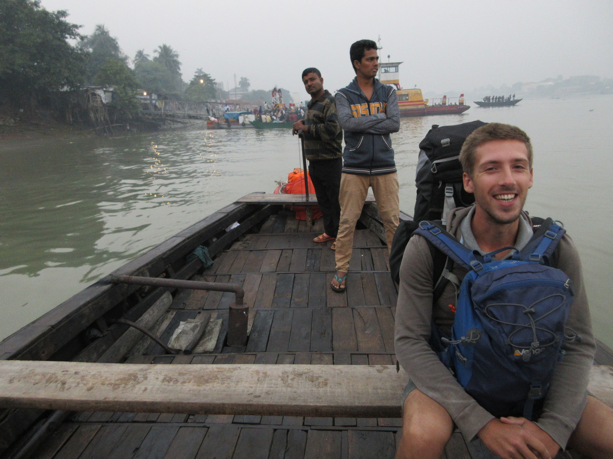
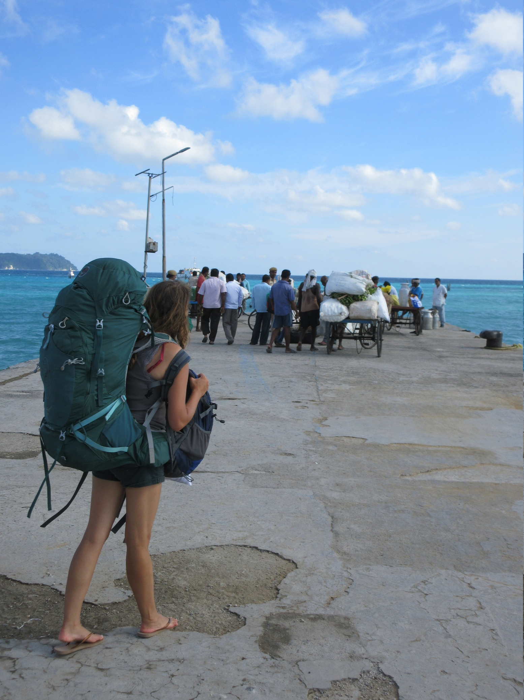
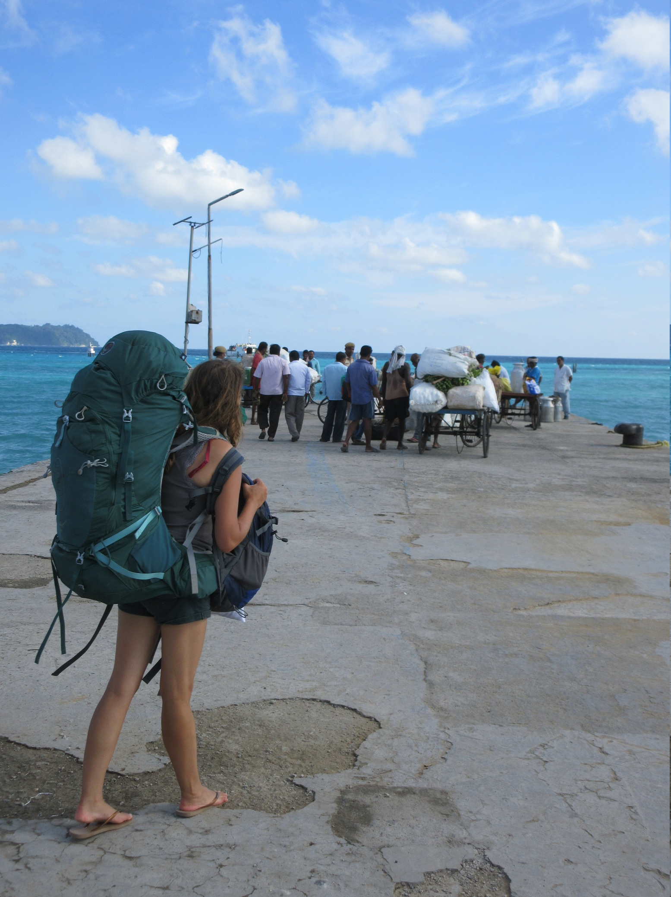
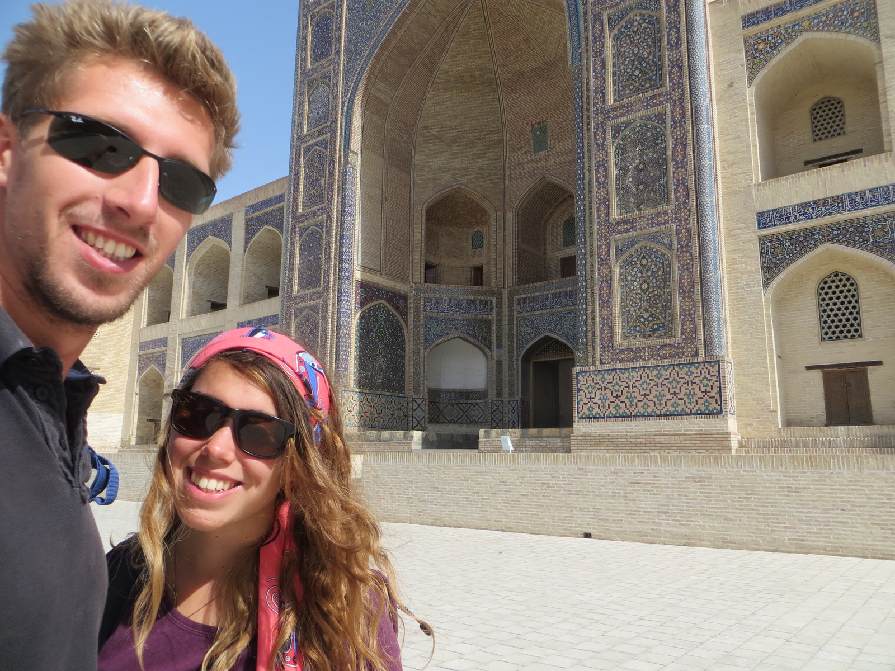
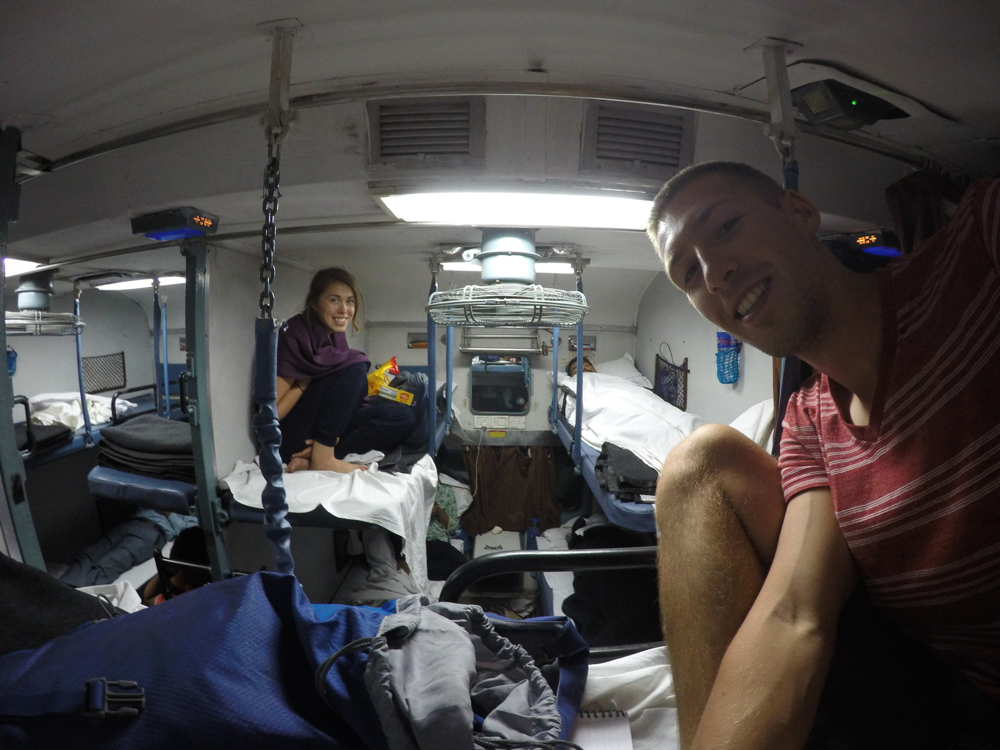
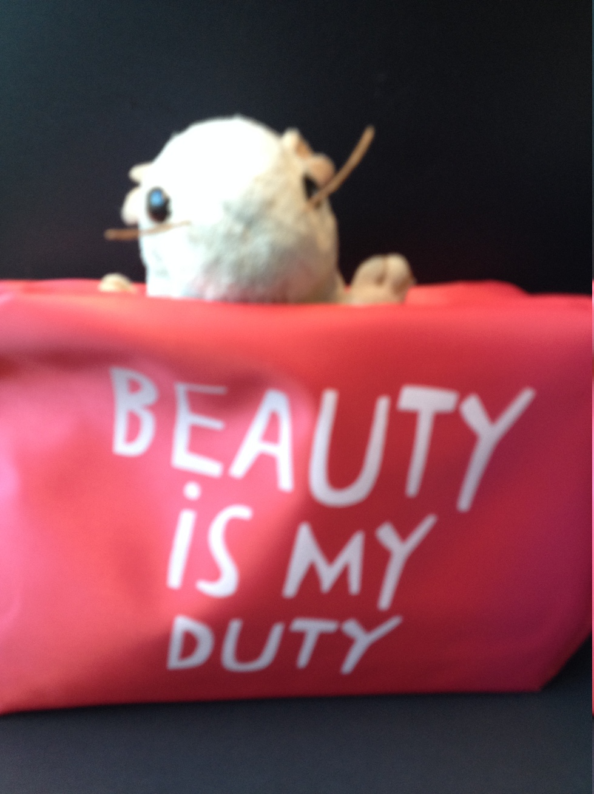
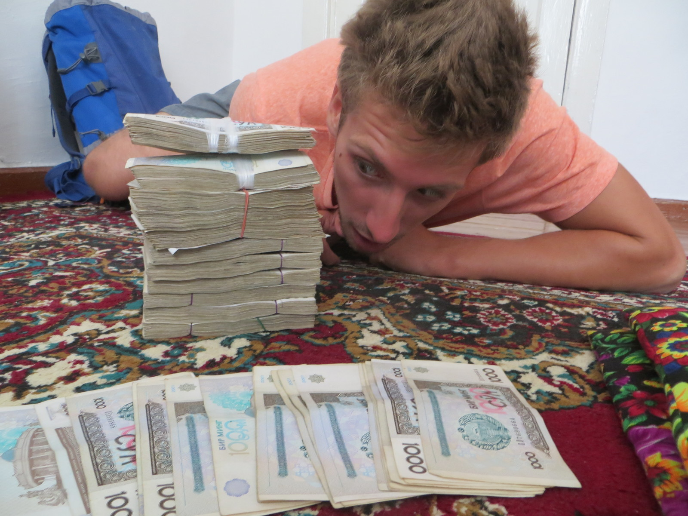

- TheUpRoutedBlog
- BLOG POSTS
- OUR ROUTES
- THE JOURNEY SO FAR
- VIDEO CHANNEL
- PHOTOGRAPHY ARCHIVE

10 Packing Essentials to Turn you Into a Backpacking Pro
By Brianna 14/January/17 India
Ooooh what to pack, what to pack? How can I choose between those sandals and these flipflops? Maybe I should take both... but then how will i fit in these shorts?! Do these shorts even fit me still? When did I last wear them? Maybe I should buy some new ones, or seek some unqualified blogger advice...
It's time. You can't put it off any longer. You were going to do it last week and then you got those more interesting last-minute plans. You made that list, but we both know you never planned on sticking to it. And now the plane/bus/train/boat/bike is practically on the move and you're still frantically willing your backpack into a TARDIS so you can fit your entire room inside, rather than go through the pain-staking process of judging each item to see whether it's worthy of being selected to join the exclusive club inside your luggage.
OK, I realise not everybody prefers my somewhat casual packing style. You probably don't spent the evening before a long journey late night panic shopping for all the things you neglected to buy and then despairing when you realise you have no space for them in your already jam-packed bag. Everyone packs differently, with different budgets, activities and destinations in mind. There's no golden combination of backpack equipment that suits every occasion. If we were invited to dinner tonight at an upscale restaurant, for example, we would need to buy entire outfits, shoes and have haircuts just to look 'normal'. There is, however, always a small pile of borderline items when you come to pack, responsible for most of your deliberation. And for good reason. These usually either become crucial carry-on crew or shrivel up in a forgotten pocket somewhere.
Here's a list of a few of our non-essential, 'packed just in case' items that made all the difference to us along the way.
ESSENTIAL NON-ESSENTIALS
Sandwich bags
Hear me out. Need to shield your toiletry bag from shampoo explosions? Sandwich bags. Protect your phone/book/kindle on the beach? Sandwich bag. Snacks for a long-distance bus rides? Sandwich bag. Touching something unhygienic? Sandwich bag glove. No rubbish bin by your tent or hotel room (*cough* India *cough*)? Sandwich bag bin. Keeping food warm while you cook on the camping stove? Sandwich bag. The possibilities are endless.
Head scarf / bed sheet / large, thin rectangular piece of cloth
For women visiting conservative countries, a headscarf is invaluable. Although I can count on one hand the amount of times I actually wore it over my head, it's a great accessory for general modesty worn over the shoulders etc. It's a much cooler, lighter and more versatile option and reduces the amount of specific conservative dress you would have to carry. Plus, it trebles up as a sarong, bed sheet and blanket on overnight journeys. There are only a couple of times we felt the need to replace the bedsheets *cough India cough Bangladesh* so this would depend on your budget and general standards of living. But some form of rectangular cloth could definitely still be of use to men for the above reasons.
Maps.me
This app's offline maps and GPS system has saved us a few times. If you like exploring places on foot, or even just want to walk to/from the station to your hostel, maps.me makes navigating so much easier. We've even successfully used it on a few hiking trails. Having something that fully functions without 4G or wifi is also great for security, as you can easily track your whereabouts in taxis and make sure you're heading the right way. It can take a little while to wake up after you've travelled a long distance, but usually after the classic 'on-again-off-again' routine, it finds you.





Dollar
As in actual USD. If you always have a little float of Washingtons to see you through, you're practically invincible. In lands without ATMs, it's usually the preferred currency of money exchanges, and often the only currency on offer. If you're applying for any visas, or visas on arrival, on the road as well, USD seems to be the universal language of international admin.
Space
No matter how harsh you tell yourself you're going to be, it's pretty inevitable that a few keep-sakes and gifts are going end up fighting for a place in the pack. I was so happy when I finally got a year's worth of belongings to comfortably squish inside my bag, I immediately filled the free space I created with a few extra items of clothing I didn't want to choose between. What I should have done, however, was leave that gap for clothes I would want later, instead of having to wrestle my bag closed at least once every three days.
Bags for your bags
Turn's out, you really can't have enough bags. I know you can buy fancy bag dividers in outdoors shops, but we make do with flimsy, Ikea style zipped nylon bags of various sizes. A bag for electrical wires, toiletries, socks, underwear, a meshed one for washing and a large, more expensive waterproof one for the bulk of everything else gets me by.
Very, very small pieces of home
This can be really difficult, especially if you're going away for a long time. Photos are a must, a few passport ones of your friends and family can do wonders to break language barriers. An album on a phone if you have one and are somewhere you feel comfortable whipping it out is also an option. A lot of people we've met have also been interested in British coins, so maybe a bit of loose change from your home country is an option. Whatever you are prepared to carry really!
A folder for important documents
Obviously important docs are essential, but some of us *Alex* are better at organising them than others *me*. Somewhere water and damage proof to put important pieces of paper and tickets is a must. I have a plastic wallet that is now in tatters and it's contents aren't in much better condition. Alex's hard plastic folder is still fresh as a daisy. Things like insurance info, the yellow fever booklet nobody ever asks for, international drivers permit, flight confirmations should all go in here. Good additions are also passport photos (maybe cheaper to get on the road) and photocopies of your passport/visas.


For campers, hikers and hand-washers Clothes pegs, spice dispenser and spare shoelaces
Clothes pegs because if you've gone to the trouble of doing all your own washing, it would be a shame if you had nowhere to hang it. Plus, they double up as bag/ crisp packet sealers.
Spare laces because if you're on a multi-day hike and your shoelaces break, what are you going to do? To be honest, we've never needed them, but it's good to know that they are there.
Spice dispenser because... Ok, this is a bit of a weird one. My good friend Dorka once gave me a tiny, plastic spice shaker as a parting travel gift and I neglected to bring it this time. Only to discover that a little salt to flavour your camping food can go a long way. So instead of taking a tiny salt shaker with us and stocking up when the opportunity arose, we lugged around a massive sandwich bag of salt, which is awkward, heavy and gets you some very suspicious looks from time to time...
There were a few more borderline objects I ummed and ahhed about including, but they didn't make the final cut. Next post, all those items that everybody tells you are essential but aren't worth the space they take up. Until then, friends!